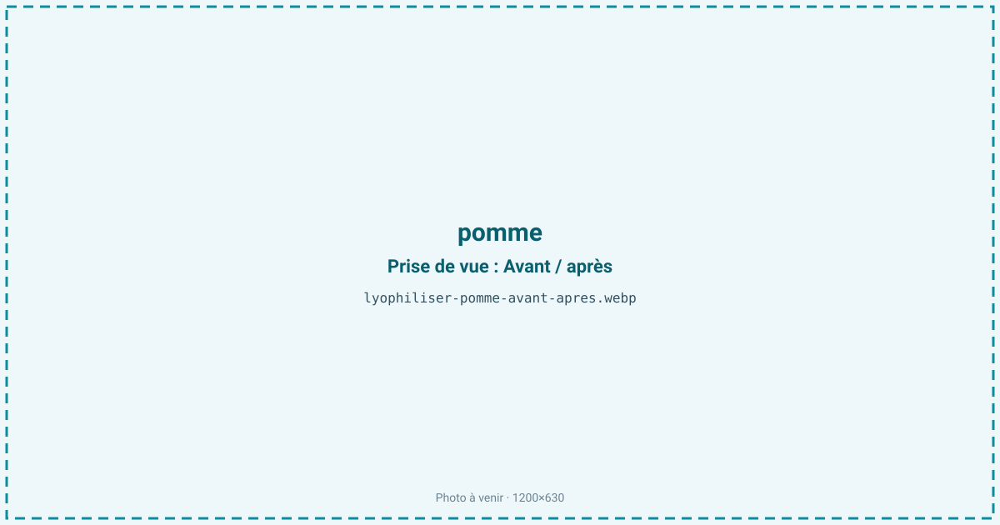
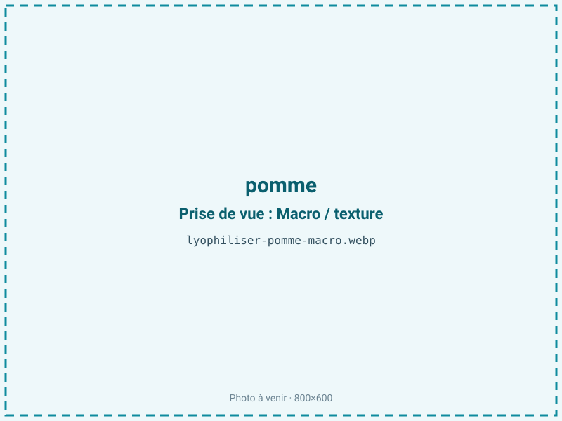
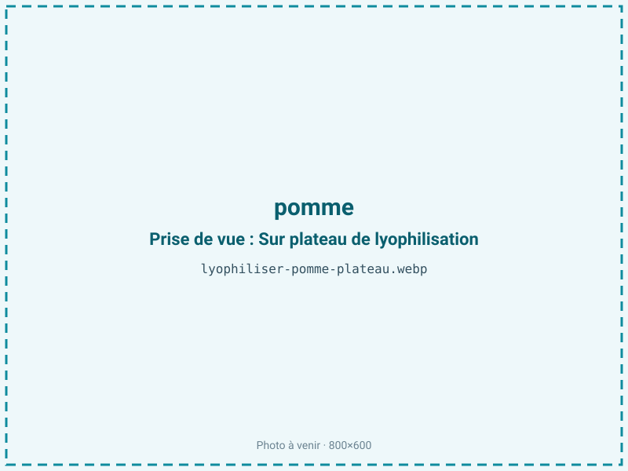
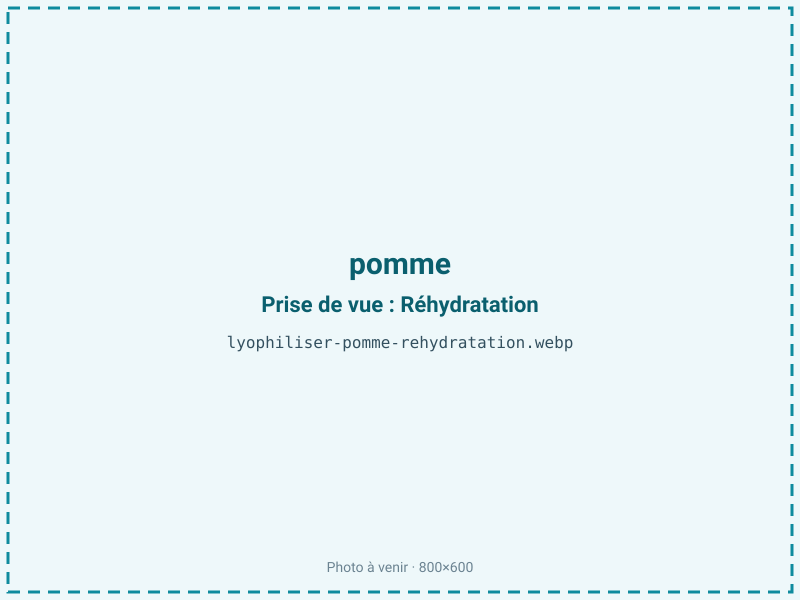

Lyophiliser des pommes
La pomme brunit dès qu'on la coupe et ramollit au stockage. La lyophilisation en fait une chip aérienne et croquante ou une poudre au goût concentré, sans huile ni cuisson, en neutralisant le brunissement par une congélation rapide.

En bref
Comment pomme se comporte à la lyophilisation
La pomme contient environ 85 % d'eau, 10 à 14 % de sucres (fructose dominant) et une charpente de pectine et de cellulose qui lui donne sa tenue. Son point faible est la polyphénoloxydase : dès la coupe, elle oxyde les polyphénols et brunit la chair en quelques minutes au contact de l'air. La lyophilisation ne détruit pas cette enzyme mais la met hors jeu en figeant l'eau très vite ; d'où l'intérêt d'un traitement rapide, parfois d'un trempage à l'acide ascorbique.
À la congélation, l'eau cristallise dans un parenchyme déjà riche en espaces intercellulaires ; à la sublimation, ces vides deviennent une structure très poreuse — c'est ce qui donne le croquant aérien caractéristique, plus marqué que sur la mangue. Le front de sublimation progresse régulièrement dans une tranche fine, et les sucres, moins concentrés que dans la mangue, exposent moins au collapse.
Paramètres de cycle
Trancher fin et régulier, 3 à 6 mm, pour un croquant homogène ; une tranche trop épaisse laisse un cœur caoutchouteux. Un trempage court à l'acide ascorbique avant congélation limite le brunissement enzymatique si la chair a pris l'air.
Congeler à −30 °C. En primaire, la pomme tolère une clayette un peu plus franche que la mangue car elle est moins sucrée, ce qui accélère le cycle. La pomme étant un produit maigre sans lipides à protéger, on vise une aw basse de 0,20 à 0,30 : descendre est favorable à la stabilité et au croquant. Critère d'arrêt : une chip qui casse net et « sonne » creux, aw inférieure ou égale à 0,30.
Pièges connus
- Brunissement : ajout d'acide ascorbique possible.
- Trancher fin pour un croquant homogène.



Variantes & provenance
La variété change le profil : une Granny Smith acide et ferme donne une chip vive et bien croquante, une Golden ou une Gala plus sucrée un résultat plus doux et légèrement plus sujet au brunissement. Les variétés fermes et pauvres en eau sèchent mieux que les pommes farineuses, qui s'effritent. Une pomme trop mûre, plus molle, donne une chip moins nette. Avec ou sans peau, le rendu diffère : la peau garde de la couleur et des fibres mais peut rester coriace. En rondelles évidées, en lamelles ou en poudre, le procédé s'adapte, la rondelle donnant la chip la plus régulière.
Conservation & DLUO
La pomme est un produit maigre : son facteur limitant est la reprise d'humidité, et à la marge le brunissement non enzymatique (réaction de Maillard entre sucres et acides aminés) si l'aw et la température remontent au stockage. Descendre l'aw reste bénéfique, la pomme n'ayant pas de lipides à protéger du rancissement. Très hygroscopique, la chip perd son croquant et devient souple en quelques minutes à l'air libre : il faut refermer vite et conditionner en sachet barrière. En sachet barrière, la pomme lyophilisée se garde 12 à 24 mois à température ambiante. Un stockage au sec et à l'abri de la chaleur limite le jaunissement et préserve le croquant sur la durée.
12 à 24 mois en sachet barrière.
Estimez selon votre emballage :
Face aux autres procédés de séchage
Au séchage à l'air chaud, la pomme brunit et durcit en un fruit sec dense et souple, loin de la chip aérée ; l'enzyme et la chaleur conjuguées virent la couleur au brun. Le micro-ondes sous vide donne une texture soufflée intéressante à coût plus bas, ce qui en fait un concurrent sérieux pour la chip de volume, mais préserve moins bien la couleur claire et l'arôme frais. La lyophilisation reste la référence pour une chip blanche, croquante et au goût net, ou une poudre claire — au prix d'un cycle plus long.
Marchés & applications
Chips de pomme en apéritif et goûter sain, inclusions en mueslis, granolas et barres, poudre pour compotes instantanées, purées infantiles et pâtisserie, décor de desserts. Les acheteurs types sont les marques de snacking sain et de petit-déjeuner, les fabricants d'aliments infantiles et les artisans pâtissiers.
- Chips de pomme
- Compotes instantanées
- Céréales
Questions fréquentes — pomme
Pourquoi ma pomme brunit-elle avant séchage ?
À cause de la polyphénoloxydase, active dès la coupe au contact de l'air. Traiter rapidement et tremper les tranches dans de l'eau citronnée ou de l'acide ascorbique évite ce brunissement.
Faut-il éplucher la pomme ?
Ce n'est pas obligatoire : la peau apporte couleur et fibres mais peut rester coriace. Beaucoup de chips premium sont faites avec la peau.
Quelle variété choisir ?
Les variétés fermes et un peu acides comme la Granny Smith donnent la chip la plus croquante ; les pommes farineuses s'effritent.
La chip est-elle vraiment croquante ?
Oui, plus que la plupart des fruits : la structure alvéolée de la pomme donne un croquant aérien qui craque sous la dent, à condition de rester au sec.
Peut-on faire de la compote instantanée ?
Oui : la poudre ou les morceaux se réhydratent à l'eau chaude pour reconstituer une compote, sans sucre ajouté.
Combien de pommes pour 100 g de chips ?
Le ratio est d'environ 8:1, soit à peu près 800 g de pommes fraîches pour 100 g de produit sec.
Faut-il ajouter du sucre ou de la cannelle ?
Non pour le sucre, le fruit se suffit ; la cannelle peut s'ajouter avant séchage pour aromatiser la chip.
Prochaine étape : envoyez-nous 200 g
Vous avez les repères de la pomme. La suite logique : nous envoyer un échantillon et repartir avec une fiche technique sur votre produit — rendement, aw finale, coût au kilo.
Tester la pomme — 250 à 500 €Déductible de votre premier lot.